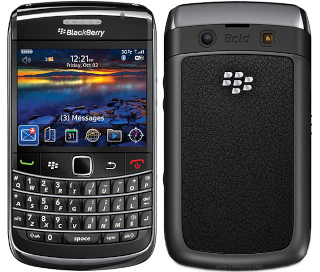

They don't make 'em like that any more: Blackberry Bold 9700
 It seems hard to believe in 2023, but Blackberry's handsets
dominated the smartphone market in many parts of the world for more than a decade.
Eventually sales were overtaken by Apple's iPhones, but this
didn't happen until 2011. When the Bold 9700 was released in 2009,
the Blackberry company was at the height of its success, and
'Blackberry' was almost synonymous with 'smartphone'.
It seems hard to believe in 2023, but Blackberry's handsets
dominated the smartphone market in many parts of the world for more than a decade.
Eventually sales were overtaken by Apple's iPhones, but this
didn't happen until 2011. When the Bold 9700 was released in 2009,
the Blackberry company was at the height of its success, and
'Blackberry' was almost synonymous with 'smartphone'.
Five years later, however, fewer than 1% of smartphones in use were made by Blackberry. Blackberry's loss was, of course, Apple's gain, and later Google's. Apple understood -- as Blackberry did not at first -- that the future of the smartphone was in the consumer space, not just in business. Blackberry's handsets emphasized features that would have been of interest to business customers -- especially rapid and secure communications, and integration with enterprise systems. Although Blackberry persevered for some years after Android came to prominence, once large businesses started allowing their employees to use personal handsets on corporate networks, any advantage the Company once had was lost. Apple's iPhones had better web browsers, better cameras, and an aggressive, fashion-oriented advertising campaign behind them.
An additional disincentive for the consumer was that Blackberry had its own data services, and it was difficult in 2009 to use a Blackberry handset without a subscription for these services. Eventually 3rd-party applications became available that made it possible to use regular IMAP email and other calendar services; but it was already too late.
For all that, the Bold 9700 was a premium product, from a company at the height of its technological powers. In a number of respects it outperforms modern handsets.

Let's look at some of the features that made the Bold special.
Most obviously, there's the keyboard. The keyboard has a positive action and, although the keys are small, it's possible (with practice) to type quickly, compared to an on-screen keyboard. The keyboard is back-lit -- an unusual feature for the time, even in larger devices. The handset is a good size for one-handed operation. The back of the device is a grippy fabric, that holds nicely to the hand. And unlike a modern glass-backed device, it won't slide off a desk that hasn't been leveled to millimetre precision.
The screen is bright, and offers decent colour handling and contrast. The resolution of 480x360 pixels is, of course, puny by modern standards; but this is in a 2.4-inch screen, so the pixel density is a tolerable 250 pixels per inch. This means that text is crisp, and a fair amount of detail can be packed into the display -- if you don't mind holding it up to your face. It was, and remains, comfortable to read and send email messages with the Bold. It's possible to play video files, and the picture quality is pretty good, but you'll need to resize them to match the screen resolution.
Although Blackberry did produce touch-screen handsets, the Bold 9700 was not one of them. Instead, it offered an optical mini touch-pad, integrated into the top row of buttons, just below the screen. That this worked -- and worked well with practice -- was because all Blackberry's software was designed from the ground up for a handset of this type. It wasn't a re-purposed PC operating system or worse, like Android, a re-purposed server operating system. The Bold is ready to use about five seconds after switch-on. Because the hardware and software are so well-matched the user interface even now seems surprisingly responsive. It certainly performs better than a cheap, unbranded Android device, anyway.
The bold had expandable storage -- something that is far from universal even now. The internal storage was a meagre 256Mb, but that was generally sufficient for offline storage of emails. The manual says that the unit will accept a 32Gb micro SD card; whether larger capacities work, I'm not sure.
There's a single-lens camera with resolution that is adequate for snapshots. It can even record video, after a fashion. The built-in speaker, while not hi-fi, is comparatively loud and clear.
The Bold's battery life puts many contemporary smartphones to shame. The battery needs to be charged every day if you have the screen on a lot, but screen-off lifetime is of the order of days or weeks. Even with extensive tweaking, I struggle to get more than two days' battery life from my Samsung phone, even if it's completely idle. What it's doing to eat the battery when it's idle I don't know -- that what we get for using a server operating system in a phone, I guess.
The Bold has GPS support, although the built-in mapping application is pretty crude. I don't know if it's still possible to get map updates for it. I understand that if you install a 3rd-party web browser, you can use Google Maps -- provided you don't mind the whole world knowing where you've been. On the subject of 3rd-party apps, it's still possible to get them, and you'll certainly need them if you want to use the handset for anything except calls, SMS, and music these days.
Incidentally, the audio player is serviceable, if basic. It even supports FLAC, and Bluetooth headphones.
The Bold 9700 had a number of features that were pretty commonplace at the time, but which we have now mostly lost. It came with a sturdy protective case, that fit that specific model. Naturally it had a 3.5mm headphone socket. The battery was user-replaceable (in less than a minute) and inexpensive -- compatible batteries are still available, for less than £10. It used a standard micro-USB port for charging, and a charger was supplied. Mind you, with a release price equivalent to about £600 in 2024's money, not including a charger would have been decidedly stingy.
How does the Bold 9700 stack up today? It's fine for calls and SMS. The keyboard is nice to use, and the screen even nicer. It's fiddly to make it work with data because the necessary settings are not well documented. It probably won't work for data much longer even if you can figure out how, because it only supports 3G/HSPDA, which most networks are retiring. You'll need 3rd-party apps for almost everything that a modern smartphone does out of the box, particularly IMAP email. The built-in browser doesn't support modern encryption standards, so many websites won't work (including this one). All the built-in communications and productivity apps were designed for use with Blackberry's subscription services, which are no longer available.
Since I degoogled my main Android cellphone, I've gotten used to seeking out replacements for the built-in apps that came with it. I've come to accept that some things I used to do, I can't do any more (Google Maps is something I miss acutely). I could, in fact, use a Bold 9700 as my only phone, and I know people even now who do. But if you're a social media junkie, you'll probably find it very restrictive.
In summary, the Bold 9700 offered well-matched hardware and software, and was designed with a respect for the consumer that modern manufacturers would do well to emulate. I doubt I shall still be using my Samsung in 15 years' time.